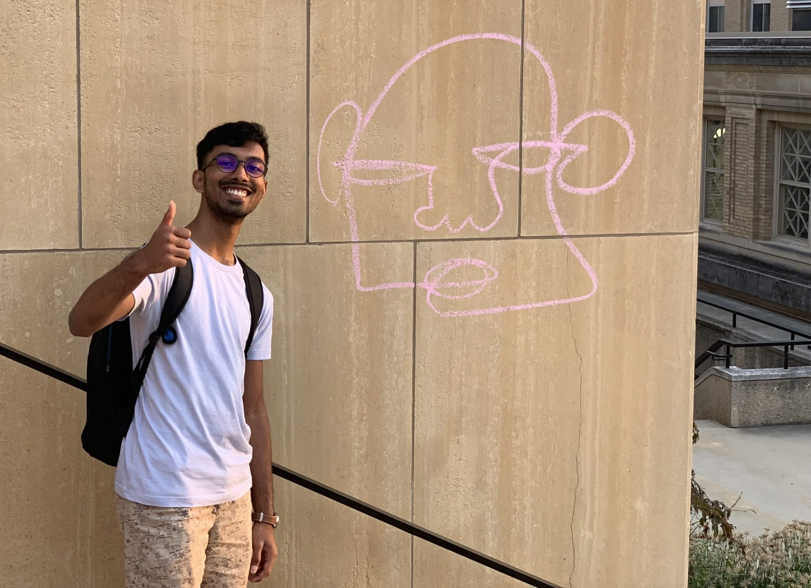

Welcome to my website! My name is Haran Mouli. I am currently a senior at the University of Wisconsin-Madison, where I major in mathematics. My interests include algebraic number theory and combinatorics. I am an active user on Math Stack Exchange.
I have been a part of the PROMYS program for several years, both in Boston and India. If you are a high school student or an undergraduate and passionate about mathematics, I cannot recommend PROMYS enough! It's a wonderful opportunity to learn and experience a lot of math, both as a student and a counselor. The program is filled with bright individuals and is a great place to make friends. The community is inclusive and vibrant; I would even go so far as to call it my second home.
You can reach out to me at hmouli[at]wisc[dot]edu.
